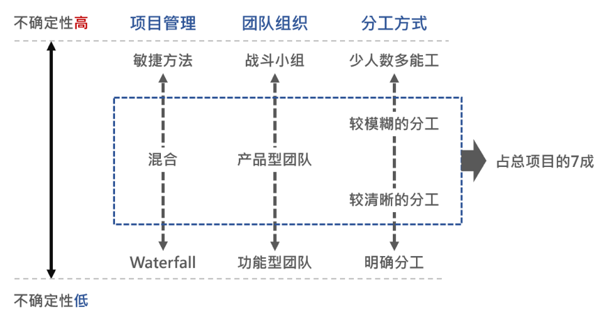
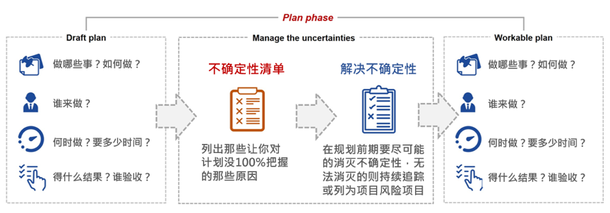

- 000 开篇词 卓越的团队，必然有一个卓越的领导者.md
- 001 你的能力模型决定你的职位.md
- 002 七位CTO纵论技术领导者核心能力.md
- 003 CEO实话实说：我需要这样的CTO.md
- 004 技术领导者不等于技术管理者.md
- 005 CTO的三重境界.md
- 006 像CEO一样思考.md
- 007 要制定技术战略，先看清局面.md
- 008 技术领导力就是成事的能力.md
- 009 CTO是商业思维和技术思维交汇的那个点.md
- 010 创业公司CTO的认知升级.md
- 011 最合适的技术才是最有价值的技术.md
- 012 谈谈CTO在商业战略中的定位.md
- 013 把脉高效执行的关键要素.md
- 014 从零开始搭建轻量级研发团队.md
- 015 定制高效研发流程.md
- 016 培养中层团队的管理认知.md
- 017 团队成长要靠技巧和体系.md
- 018 做到这四点，团队必定飞速成长.md
- 019 将企业打造成一所终身大学.md
- 020 论团队管理与共同升级.md
- 021 绩效管理的目标不仅仅是绩效考核.md
- 022 验证研发团队价值的绩效考核机制.md
- 023 产品技术团队OKR使用法则.md
- 024 996、987，程序员加班文化你怎么看？.md
- 025 建立有效的员工淘汰机制.md
- 026 让细节的病毒感染你的团队.md
- 027 如何在不同组织文化下推行技术管理.md
- 028 业务高速增长期的团队管理：知轻重、重绸缪、调缓急.md
- 029 被8成的人误解的工程师文化.md
- 030 关于工程师文化的六个问题.md
- 031 五位技术领导者的文化构建实战.md
- 032 文化是管理的那只无形之手.md
- 033 选对的人，做正确的事情.md
- 034 打好技术团队搭建的基础.md
- 035 做个合格的技术岗位面试官.md
- 036 高潜力人才的内部培养.md
- 037 技术创业该如何选择赛道.md
- 038 CTO要掌握的产品哲学：理性与人性的权衡.md
- 039 从客户价值谈技术创新.md
- 040 技术人投身创业公司之前，应当考虑些什么？.md
- 041 技术人创业前要问自己的六个问题.md
- 042 团队激励之分配好你的奖金.md
- 043 通过积分考核提升技术团队的绩效.md
- 044 空降技术高管的择业七计.md
- 045 选好人生下一站–CTO空降上篇.md
- 046 走出至暗时刻–CTO空降下篇.md
- 047 空降领导者平稳落地要做的四道题（上）.md
- 048 空降领导者平稳落地要做的四道题（下）.md
- 049 打造高效的研发组织架构：高效研发流程那些事（一）.md
- 050 你的研发流程符合你的组织架构吗？谈高效研发流程那些事（二）.md
- 051 聊聊研发流程管理中的那些坑：高效研发流程那些事（三）.md
- 052 数据如何驱动研发高效运转？谈高效研发流程那些事（四）.md
- 053 如何打造高效且敏捷的组织文化？谈高效研发流程那些亊（五）.md
- 054 打造高速运转的迭代机器：现代研发流程体系打造（一）.md
- 055 用机器打造迭代机器：现代研发流程体系打造（二）.md
- 056 有了敏捷开发，那交付期限去哪儿了？.md
- 057 敏捷中的期限之殇，软件业该怎么做？.md
- 058 如何打造个人技术品牌？.md
- 059 技术演，有章可循.md
- 060 正确对待技术演中的失误.md
- 061 刘俊强：技术最高决策者应该关注技术细节吗 .md
- 062 张溪梦：技术领袖需要具备的商业价值思维.md
- 063 未来组织形态带来的领导力挑战.md
- 064 如何判断业务价值的高低.md
- 065 如何打造高效的分布式团队？.md
- 066 如何打造有活力、持续创新的研发团队？.md
- 067 如何打造独属自己的工程师文化？.md
- 068 如何打造一个自组织团队？.md
- 069 茹炳晟：QE团队向工程效能团队转型的实践之路.md
- 070 技术、产品、管理的不同视角.md
- 071 什么样的人适合考虑管理角色.md
- 072 创业公司如何招到合适的人才.md
- 073 用数据来分析管理员工.md
- 074 为什么给了高工资，依然留不住核心员工？.md
- 075 刘俊强：一本正经教你如何毁掉一场技术演.md
- 076 内部技术会议的价值.md
- 079 程军：从0到1打造高效技术团队的方法论.md
- 080 技术Leader的持续成长.md
- 081 游舒帆：一流团队必备的商业思维能力.md
- 082 游舒帆：数据力，透过数据掌握公司经营大小事.md
- 083 游舒帆：运营力，让用户出现你期待的行为.md
- 084 游舒帆：策略力，让目标与行动具备高度一致性.md
- 085 游舒帆：敏捷力，拥抱不确定性，与VUCA共舞.md
- 086 刘俊强：管理者必备的高效会议指南（上）.md
- 087 刘俊强：管理者必备的高效会议指南（下）.md
- 088 刘俊强：做好一对一沟通的关键要素（上）.md
- 089 刘俊强：做好一对一沟通的关键要素（下）.md
- 090 程军：打造高效技术团队之招人.md
- 091 程军：打造高效技术团队之做事.md
- 092 成敏：技术负责人如何做优先级决策.md
- 093 兰军：团队研发效率低下的要因分析.md
- 094 兰军：提升产品团队研发效率的实践（上）.md
- 095 兰军：提升产品团队研发效率的实践（下）.md
- 096 阿禅：工程师转型产品经理可能踩到的坑.md
- 097 阿禅：工程师转型产品经理的必备思维.md
- 098 徐裕键：业务高速增长过程中的团队迭代.md
- 099 徐裕键：业务高速增长过程中的技术演进.md
- 100 徐裕键：团队文化建设，保持创业公司的战斗力.md
- 101 刘俊强：领导力提升指南之培养积极的态度.md
- 102 姚从磊：巧用AARRR模型，吸引优秀技术人才（一）.md
- 103 姚从磊：巧用AARRR模型，吸引优秀技术人才（二）.md
- 104 姚从磊：巧用 AARRR 模型，吸引优秀技术人才（三）.md
- 105 姚从磊：巧用 AARRR 模型，吸引优秀技术人才（四）.md
- 106 程军：技术人的「知行合一」（一）.md
- 107 刘俊强：消除压力的七种方法.md
- 108 谢呈：技术高手转身创业的坑和坡.md
- 109 谢呈：关于垂直互联网创业的一些经验之谈.md
- 110 成敏：创业公司为什么会技术文化产品缺失.md
- 111 蔡锐涛：从0到1再到100，创业不同阶段的技术管理思考.md
- 112 刘俊强：必知绩效管理知识之绩效管理循环.md
- 113 程军：技术人的「知行合一」（二）.md
- 114 成敏：谈谈不同阶段技术公司的特点.md
- 115 成敏：打造优秀团队与文化的三个推手.md
- 116 刘俊强：必知绩效管理知识之绩效目标的制定.md
- 117 程军：技术人的「知行合一」（三）.md
- 118 吴铭：成本评估是技术leader的关键素质.md
- 119 汤力嘉：CTO如何进行产品决策（一）.md
- 120 刘俊强：必知绩效管理知识之绩效数据收集（上）.md
- 121 刘俊强：必知绩效管理知识之绩效数据收集（下）.md
- 122 黄伟坚：创业中那些永远回避不了的问题.md
- 123 黄伟坚：用系统性思维看待创业.md
- 124 刘俊强：必知绩效管理知识之评定绩效.md
- 125 洪强宁：从程序员到架构师，从架构师到CTO（一）.md
- 126 洪强宁：从程序员到架构师，从架构师到CTO（二）.md
- 127 刘俊强：必知绩效管理知识之绩效沟通（一）.md
- 128 王坚：年轻人永远是创新的主体.md
- 129 刘俊强：必知绩效管理知识之绩效沟通（二）.md
- 130 刘俊强：必知绩效管理知识之绩效沟通（三）.md
- 131 汤力嘉：CTO如何在产品方面进行决策（二）.md
- 132 徐函秋：转型技术管理者初期的三大挑战（一）.md
- 133 徐函秋：转型技术管理者初期的三大挑战（二）.md
- 134 刘建国：我各方面做得都很好，就是做不好向上沟通.md
- 135 钮博彦：软件研发度量体系建设（一）.md
- 136 钮博彦：软件研发度量体系建设（二）.md
- 137 成敏：创业者不要成为自己公司产品技术文化的破坏者.md
- 138 于艺：以生存为核心，B端产品的定位心法.md
- 139 成敏：创业者应该具备的认知与思维方式.md
- 140 袁店明：创业产品必须迈过的鸿沟.md
- 141 徐毅：五星级软件工程师的高效秘诀（一）.md
- 142 徐毅：五星级软件工程师的高效秘诀（二）.md
- 143 徐毅：技术Leader应该具备的能力或素质.md
- 144 于艺：如何提升自己的能力与动力.md
- 145 李列为：技术人员的商业思维.md
- 146 刘天胜：打造高效团队，关键在于平衡人、事和时间（一）.md
- 147 刘天胜：打造高效团队，关键在于平衡人、事和时间（二）.md
- 148 肖德时：创业团队技术领导者必备的十个领导力技能（上）.md
- 149 肖德时：创业团队技术领导者必备的十个领导力技能（下）.md
- 150 暨家愉：技术人如何快乐的自我成长（上）.md
- 151 暨家愉：技术人如何快乐的自我成长（下）.md
- 152 施翔：如何打造7 24高效交付通道（上）.md
- 153 施翔：如何打造7 24高效交付通道（下）.md
- 154 谢东升：说说技术管理者从外企到民企的挑战.md
- 155 王可光：如何搭建初创团队之人才关.md
- 156 成敏：技术人转型管理的两大秘诀.md
- 157 成敏：技术人才的管理公式.md
- 158 胡峰：人到中年：失业与恐惧.md
- 159 黄云：技术管理者如何科学的做好向上管理.md
- 160 胡键：创业公司需要高凝聚力高绩效的技术团队.md
- 161 卢亿雷：企业发展的不同阶段，该如何打造高效的研发流程体系.md
- 162 王海亮：提升技术团队效率的5个提示（上）.md
- 163 王海亮：提升技术团队效率的5个提示（下）.md
- 164 陈崇磐：心理成熟度 - 创业公司识人利器.md
- 165 陈崇磐：管事与管人 - 如何避开创业公司组队陷阱.md
- 166 俞圆圆：合格CTO应该做好的5件事（上）.md
- 167 俞圆圆：合格CTO应该做好的5件事（下）.md
- 168 余加林：从技术人到创业合伙人必备的三个维度的改变.md
- 169 高琦：如何给研发打绩效不头疼而又公正？（上）.md
- 170 高琦：如何给研发打绩效不头疼而又公正？（下）.md
- 171 邱良军：如何有效地找到你心仪的人才.md
- 172 于人：研发团队人均产能3年提升3.6倍的秘诀（上）.md
- 173 于人：研发团队人均产能3年提升3.6倍的秘诀（下）.md
- 174 邱良军：打造高效技术团队，你准备好了吗！.md
- 175 邱良军：打造高效技术团队的人才招聘攻略.md
- 176 胡键：创业公司如何打造高凝聚力高绩效的技术团队：组织篇.md
- 177 胡键：创业公司如何打造高凝聚力高绩效的技术团队：工具篇.md
- 178 马连浩：用人的关键在于用人所长，而非改人之短.md
- 179 张矗：技术管理者必经的几个思维转变.md
- 180 钟忻：成为温格-聊聊如何当好CTO.md
- 181 姚威：技术团队管理中关于公平的五个核心准则.md
- 182 谢文杰：区块链的下一个十年.md
- 183 薛文植：技术管理的本质-要做尊重人性的管理.md
- 184 狼叔：2019年前端和Node的未来-大前端篇（上）.md
- 185 狼叔：2019年前端和Node的未来-大前端篇（下）.md
- 186 赵晓光：如何培养团队竞争力（上）.md
- 187 赵晓光：如何培养团队竞争力（下）.md
- 188 张嵩：从心理学角度看待小中型团队的管理.md
- 189 狼叔：2019年前端和Node的未来-Node.js篇（上）.md
- 190 狼叔：2019年前端和Node的未来-Node.js篇（下）.md
- 191 肖冰：如何建立高信任度的团队.md
- 192 崔俊涛：如何做好技术团队的激励（上）.md
- 193 崔俊涛：如何做好技术团队的激励（下）.md
- 194 刘俊强：2019年云计算趋势对技术人员的影响.md
- 195 吴晖：企业B2B服务打磨的秘诀-ESI.md
- 196 邱良军：关于做好技术团队管理的几点思考.md
- 197 邱良军：做好研发管理的3个关键.md
- 198 徐林：通过快速反馈建立充满信任的技术团队.md
- 199 宝玉：怎样平衡软件质量与时间成本范围的关系？.md
- 200 邱良军：沟通，沟通，还是沟通（上）.md
- 201 邱良军：沟通，沟通，还是沟通（下）.md
- 202 陈嘉佳：奈飞文化宣言（上）.md
- 203 陈嘉佳：奈飞文化宣言（下）.md
- 204 邱良军：从小处着眼，修炼文化价值观.md
- 205 邵浩：人工智能新技术如何快速发现及落地（上）.md
- 206 邵浩：人工智能新技术如何快速发现及落地（下）.md
- 207 许良：科创板来了，我该怎么办？.md
- 208 陈阳：科创板投资，未来哪些行业受益最大？.md
- 大咖对话 万玉权：如何招到并培养核心人才.md
- 大咖对话 万玉权：高效团队的关键，以目标为导向，用数据来说话.md
- 大咖对话 不可替代的Java：生态与程序员是两道护城河.md
- 大咖对话 从几个工程师到2000多个工程师的技术团队成长秘诀.md
- 大咖对话 以产生价值判断工程师贡献–读者留言精选.md
- 大咖对话 余沛：打造以最佳交付实践为目标的技术导向.md
- 大咖对话 余沛：进阶CTO必备的素质与能力.md
- 大咖对话 刘俊强：云计算时代技术管理者的应对之道.md
- 大咖对话 刘俊强：谈谈我对2019年云计算趋势的看法.md
- 大咖对话 创业就是把自己过去的经验快速的产品化.md
- 大咖对话 如何打造自我驱动型的技术团队？.md
- 大咖对话 如何高效管理8000多规模的技术团队.md
- 大咖对话 季昕华：以不变的目的应对多变的技术浪潮.md
- 大咖对话 对人才的长期投资是人才体系打造的根本.md
- 大咖对话 张建锋：创业可以快而大，也可以小而美.md
- 大咖对话 彭跃辉：保持高效迭代的团队是如何炼成的.md
- 大咖对话 彭跃辉：解决用户痛点就是立足于市场的秘诀.md
- 大咖对话 徐毅：如何提升员工的活力与动力？.md
- 大咖对话 徐毅：打造高效研发团队的五个维度及相关实践.md
- 大咖对话 技术人创业前衡量自我的3P3C模型.md
- 大咖对话 技术人真正需要的是升维思考.md
- 大咖对话 技术管理者应该向优秀的体育教练学习.md
- 大咖对话 未来技术负责人与首席增长官将如何协作？.md
- 大咖对话 李昊：创业公司如何做好技术团队绩效考核？.md
- 大咖对话 李智慧：技术人如何应对互联网寒冬.md
- 大咖对话 杨育斌：技术领导者要打造技术团队的最大化价值.md
- 大咖对话 池建强：做产品不要执着于打造爆款.md
- 大咖对话 焦烈焱：从四个维度更好的激发团队创造力.md
- 大咖对话 玉攻：四个维度看小程序与App的区别.md
- 大咖对话 王坚：我从不吃后悔药.md
- 大咖对话 王平：从人、事、价值观、文化等维度看技术团队转型.md
- 大咖对话 王平：如何快速搭建核心技术团队.md
- 大咖对话 王鹏云：技术人创业该如何选择合伙人？.md
- 大咖对话 王鹏云：管理方式的差异是为了更好地实现企业商业价值.md
- 大咖对话 王龙：利用 C 端连接 B 端实现产业互联网是下半场的重中之重.md
- 大咖对话 童剑：用合伙人管理结构打造完美团队.md
- 大咖对话 管理者是首席铲屎官？.md
- 大咖对话 胡哲人：技术人创业要跨过的思维坎.md
- 大咖对话 袁店明：如何将打造自组织团队落诸实践.md
- 大咖对话 袁店明：打造高效研发团队的五个要点.md
- 大咖对话 让团队成员持续的enjoy.md
- 大咖对话 谢孟军：技术人如何建立自己的个人品牌.md
- 大咖对话 谭待：架构的本质是折中.md
- 大咖对话 陈天石：AI 芯片需要技术和资本的双重密集支撑.md
- 大咖对话 陈斌：如何打造高创造力、高动力的技术团队.md
- 大咖对话 陶真：技术人要爱上问问题，而不是自己的解决方案.md
- 大咖对话 韩军：CTO转型CEO如何转变思路.md
- 大咖对话 项目成功的秘诀–技术产品双头负责制.md
- 大咖对话 顾旻曼：投资时我们更多地是在找优秀的团队.md
- 大咖对话 高斌：过分渲染会过度拉高大众对人工智能的期望.md
- 大咖问答 发现下一个小米，不是只能靠运气.md
- 大咖问答 打造自己的个人品牌，你也可以.md
- 新春特辑1 卓越CTO必备的能力与素质.md
- 新春特辑2 如何成长为优秀的技术管理者？.md
- 新春特辑3 如何打造高质效的技术团队？.md
- 新春特辑4 如何打造高效的研发流程与文化？.md
- 新春特辑5 如何做好人才的选育用留？.md
- 温故而知新 一键直达，六大文章主题索引.md
- 结束篇 即使远隔千山万水，也要乘风与你同往.md
050 你的研发流程符合你的组织架构吗？谈高效研发流程那些事（二）
你好，我是箴亚管理顾问公司负责人，同时也是TGO鲲鹏会台北分会学习委员游舒帆，今天想跟大家分享的话题是“高效研发流程的第二步，研发管理流程的选型”。在上一篇文章中我与大家分享了组织架构与打造高效研发流程间的关联，本文将着重于研发过程的探讨。
刚出社会时，我在一家ERP软件公司从事研发工作，我在那里接触到了非常正规的软件工程，也见识到当研发流程与业务特性匹配时的高效，以及不匹配时产生的诸多问题。在2000年初期，软件开发大多仍遵循瀑布式(Waterfall)方法，必然得先进行需求收集、分析、设计，然后进入开发与测试，经过一道道程序后将成品完整的交付。
在ERP软件公司的那些年，我也参与了软件成熟度模型CMMI Lv4的导入与认证，过程中，我见识到了CMMI的严谨之处，同时也体会到严谨背后带来的低效与冗余。由于当时我所负责的产品处于需求不明确、市场性待验证的状态，如果要依照CMMI的规则产出完整的需求列表与完整的分析文件，估计是不可能的。
因此在过程中我试着提出用假设性需求，以及用雏型替代成品的方法来进行市场验证。出乎意料的是，这个提议获得了CMMI顾问团队的认同，而这也是我对CMMI有所改观的转折点。公司内推动小组的负责人告诉我：“CMMI本来就是一个模型，每家公司得依照自己最适合的方式建构流程，但最终须能达到CMMI要求的水平。”
2011年，我开始负责SaaS相关业务，也首次接触了敏捷观念以及Scrum，与此同时，互联网开始进入火爆增长期，所有的企业都在求新求快，技术团队也被要求要具备更灵活、更弹性、更迅速的特性，只是一两年时光，国内所有公司都在讨论敏捷开发，而不再有人讨论PMP和CMMI所主张的瀑布式项目管理与研发流程管理方法。
2013年，我开始在团队中大量引用敏捷观念，通过频繁的交付来验证用户与市场需求，也在技术社区中与许多朋友交流项目管理与软件开发方法，我看见越来越多的人想拥抱敏捷，但同时我也发现，许多人对敏捷其实一知半解，并且对PMP及CMMI有着错误的偏见。
2015年，我进入互联网公司后，人人口中所谈的都是敏捷，万一在讨论过程中有人提到CMMI或PMP，就会有人露出鄙视的眼神，他们误以为过去项目做不好，是PMP与CMMI所造成的，却未曾思考过，或许项目失败的真正原因不在流程与工具，而是运用的那些人。
关于瀑布式或敏捷开发方法的选择
在前一篇文章中，我提到当企业内外部状况稳定，需求的变化性较少，可预测性高时，功能型组织是相对适合的组织架构，而相同的概念，其实也适用于传统的PMP管理方法。PMP强调程序、输入(input)、输出(output)与权责，这与功能型组织不谋而合；相较之下，敏捷强调的快速响应、迭代，则与产品型组织或战斗小组更加匹配。
当一家公司内可能存在多种组织架构时，是否也意味着应该存在多种开发流程呢？我的答案是”肯定的”，当我们过度坚持公司内只能有少数一两套程序，硬要逼所有人配合时，其实已经与敏捷所追求的“专注于更快的创造价值，持续精进”的理念背道而驰了。
最近几年，我一直在同时并行管理多种组织与开发流程，接下来将跟大家分享在不同的场景下我是如何选择的：
1.需求具备高度不确定性，重要性高，但时程紧迫度一般
例如新商业模式的探索、从2B跨入2C的新产品等，这样的任务我一般会以战斗小组的形式组成团队，团队成员会根据当下需求随时做调整，可能是1位产品经理配2位研发工程师，也可能是3位具备分析能力的资深工程师。
这样的团队基本上不会有太明确的分工与流程来局限他们，团队可以选择自己熟练的工具，协议合适的分工，唯一的目标就是把问题给解决掉。
2.需求有一定不确定性，且时程紧迫
例如要赶及在某一天推出新产品或新feature，藉此创造市场话题。这样的任务一般我会交由产品型组织来完成，而为了持续降低不确定性，他们需要频繁的交付成果以验证市场反应，以期在deadline之前把产品交付出来。在我过去几年实施敏捷的经验里，这一类的项目约占总项目的7成左右。
在这类项目中，为了同时兼顾效率与质量，团队基本上会依循一定的程序进行项目目标定义、需求厘清、开发、测试与布署，而在分工上，一个人可能会同时兼任多种角色，例如资深工程师除了要写代码外，也要负责架构设计与需求厘清，而产品经理可能同时兼任项目经理与原型设计。
复杂度较高的项目，可能设有独立的项目经理，否则多数状况下产品经理必须兼任项目经理角色，他们必须对项目负责；而架构师与用户体验设计师则不见得会参与每个项目，除非项目涉及较大的架构变迁或选型，以及明显的用户体验缺陷或改进。
分工的方式会根据不同的项目而有所不同，唯一的原则就是，分工必须是必要的，如果只是在工作流程上卡一关，但没有对项目带来实质效益，那分工便非必要。
3.需求具有高度确定性
例如与战略伙伴合作的项目，彼此已经先把所有需求厘清，并且敲定了验收时间。这样的项目一般我会另外组织项目团队，按瀑布式开发流程推进，并切出几个重要的里程碑进行阶段性验收。
如果敏捷是藉由更快且更频繁的交付，以期降低不确定性并更快的创造价值，那么在目前的项目中，需求基本上已经非常明确，时程也按着彼此协议好的时间进行，中间其实不存在太多需要通过迭代来验证的内容。唯一需要的是按表操课、如期如质的将成果交付出来。
独立的团队，明确的计划、分工与权责，加上里程碑查核，这类案子的稳定度是最高的。所以时至今日，多数的外包项目，都还是依循着这种程序，否则将在报价、管理与验收上产生诸多困难。
上述内容汇整后，可以用下面这张图做个概括性的理解，根据目标与需求的不确定性的高低，所采取的项目管理方法、团队组织与分工方式也不同。

追求敏捷，但更要重视项目管理基本功
在领导团队时，我特别强调项目管理的基本功，因为我认为多数的问题都是出在基本功不够扎实。在项目开始前与进行中，一般我会对产品经理提出很多问题，以确保项目能如原先预期推进。
在项目启动阶段，一般会由团队就已知信息先拟定draft plan，其内容主要是陈述项目要做哪些事？打算如何进行？由谁来做？预计花费多少时间？以及将得到什么样的结果？
而当团队将计划产出后，我会问产品经理：“这个项目中有哪些不确定性，可能会导致你无法准时交付？”项目管理早期的主要问题大多是“需求不够清晰”、“不确定人力资源能否配合”、“对工作的估时过长或过短”、“技术可行性待验证”、“老板可能还会改动需求”等等，而这些，就是导致项目进行阶段会频繁发生变更(change)的原因。
相对的，如果你在规划时期，就已经先把这些问题排除了，那运行时会面临的变更就相对减少了，案子的进行也会相对轻松许多。

这些对我来说都是项目管理的基本功，敏捷虽然强调拥抱不确定性，并欢迎随时的更动，但不意味着我们要对那些不确定性置之不理，而是要尽快的让不确定成为确定。 敏捷强调不断进步与反馈，我们必须通过一个又一个项目的磨练，让自己能把需求看得更清楚，对时程估算得更准确，能更有效的对齐老板的期待，而要做到这些，团队就需要逼着自己不断进步。
若你对Scrum架构有所研究，你便会发现best practice里头强调的架构，其实正是针对上述几个最常见的项目不确定性而来的。例如，针对时程，Scrum强调固定的交付周期，以1-4周为佳，而且强调是固定团队，在过程中也尽可能避免团队成员同时参与多个项目，在这个基础上，再来讨论这样的团队，在一个迭代时间内可以完成多少工作。
Scrum给出了一些框架与规范，确实有助于提升团队的项目管理水平，如果团队原本的项目管理能力只有60分，或许导入Scrum后能提升到80分，但如果要做到90分，团队还是要根据所遭遇到的问题进行持续不断的改善。
进步，是永远不变的追求
曾有一个team leader在一次会议后问我：“老大，不断打破与调整流程，让大家忙得要命，背后追求的到底是什么？”
我说：“进步。忙是一时的，但你想想一年前我们做一样的事情花多少时间，现在又花多少时间？针对一个异常，过去我们是发生后才知道，现在我们已经可以弭平于未发之时。从前我们没日没夜的工作，换来的却是很多谩骂，但现在我们花更少的时间，却换回更多的掌声，因为我们持续在进步。”
如果需求管理不当、时程估算误差过大、未以正确的态度面对不确定性、项目过程控管差劲，却总是靠着团队加班来填补落差，团队可以靠着热情撑过一小段时间，但随着时间延长，团队总是会乏力，身为技术领袖应该要以持续进步为己任，而不该沾沾自喜于团队的超时工作。
记得，永远都要追求更快、更好、更有价值，别用战术上的勤奋，来掩饰战略上的怠惰。
© 2019 - 2023 Liangliang Lee. Powered by gin and hexo-theme-book.